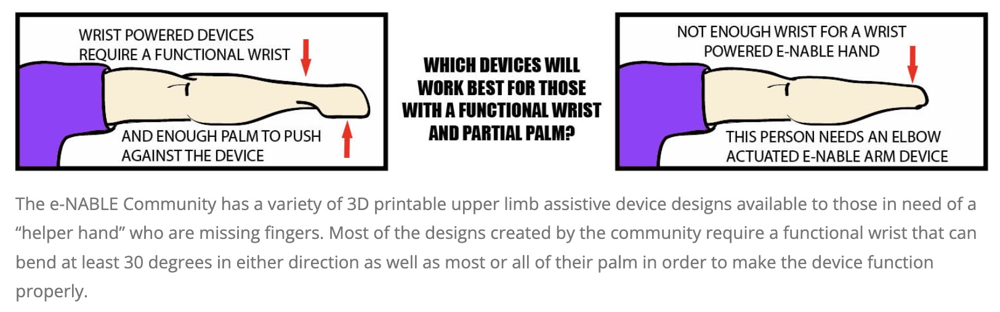
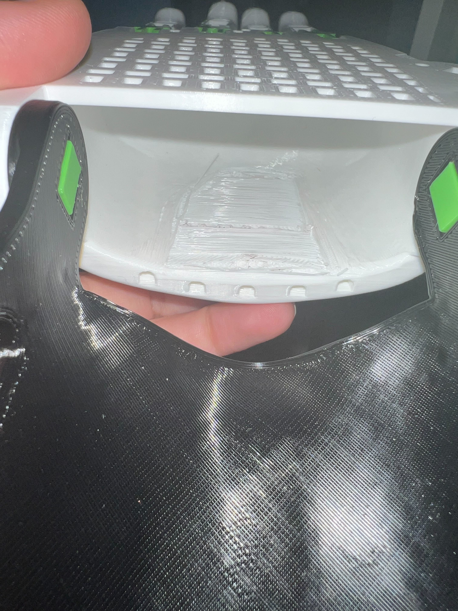
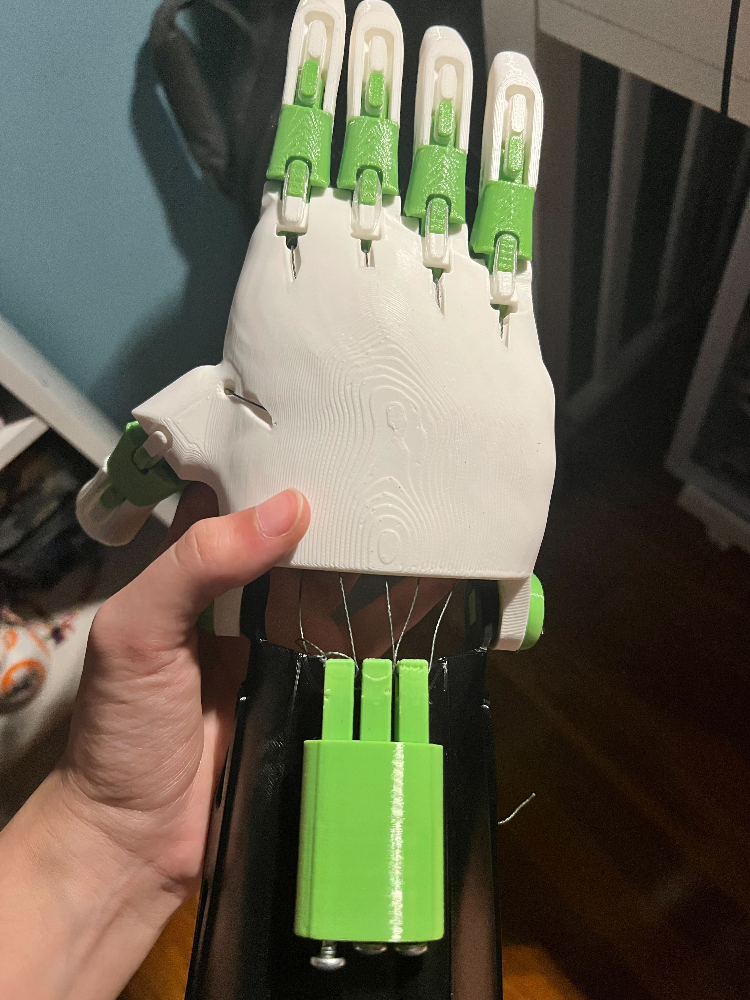
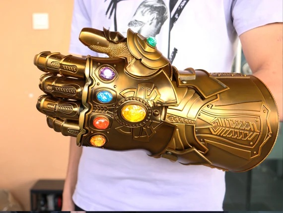
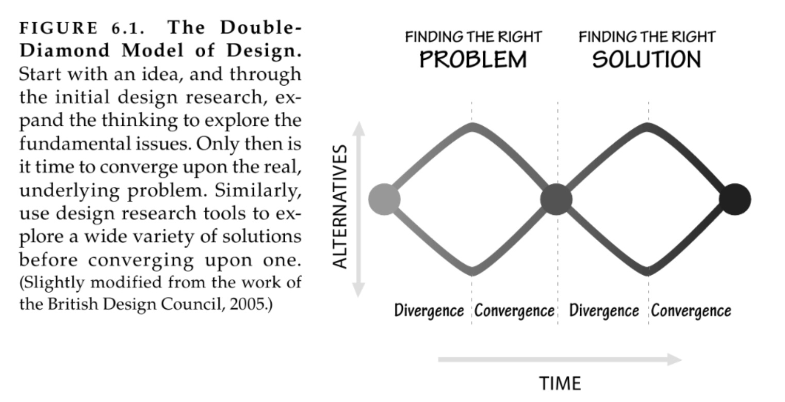
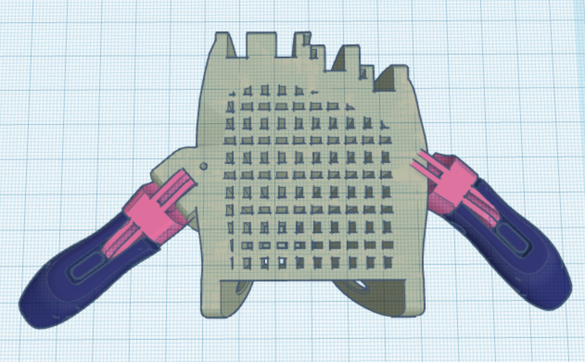

Prosthetics are expensive, and take time to get right. However, with 3D printing more widely available, E-NABLE is an organization that compiles resources to print prosthetic hands yourself. The goal of this project was to assemble one of these prosthetics. To make it easier we were to print it at 150% scale. I noted that this website had a lot of resources for choosing what design to use:
And fitting these hands for a client
Printing
As this is the most complex geometry we've printed, there were bound to be an overhang or two. We first decided to print the palm with supports, but after it ended up as a cluster of plastic. So, we printed it without supports instead. This left a small overhang that was cleaned up with some sandpaper.
Assembly
Adding the strings. As I saw with the PLA 3D printed alarm clock, the geometry wasn't exact, and the tensor pins needed to be sanded down to fit properly. After that, the strings were attached and the hand fit together and looked good! 
Modification
This design can be improved. My partner on this project, Gabriella, described the hand as stiff, almost like a Thanos infinity gauntlet toy.
When I was perusing prosthetics on Youtube. I found this prosthetic for a 'third' thumb.
The idea is that with a thumb on both sides of your palm, you can grip objects a bit better. It seemed a bit paradoxical, but by diverging from a design that looks like a human hand, we could create a hand that feels more natural. Here, I used Norman's idea of divergent thinking to free myself from a design that stuck to what I thought I needed (a better hand) and found that I really needed (a better way to grip). In his words, I found the right problem.
The modification would be simple by just adding a thumb on the other side of the palm.
Conclusion
I can see the confluence of online resources such as E-NABLE, rapid prototyping, and design thinking. Firstly, the website does a good job of acknowledging that it's hard to get it right on the first try. Sometimes a hand will be too small, or too big! Rapid prototyping allows you to not get it right on the first try, and keep iterating until something fits. Then, improving on the design required me to think outside of the box, which is where divergent thinking was helpful.